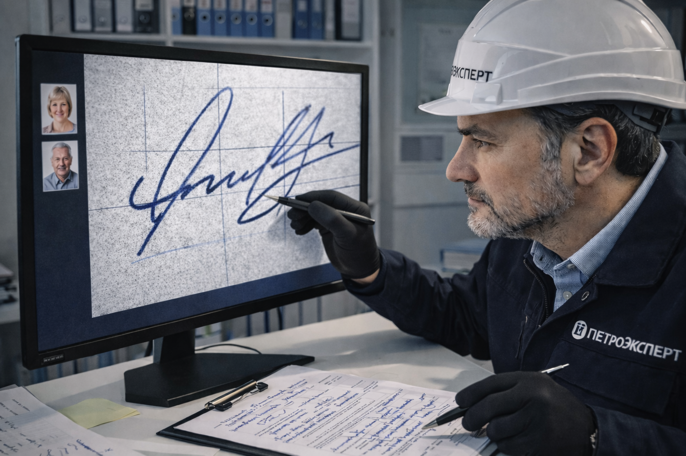

Экспертиза подписи — один из видов криминалистических исследований, проводимых нашим Центром. Посредством проведения научного анализа эксперт способен достоверно определить автора исследуемой записи, его физиологические характеристики (пол, возраст), психоэмоциональное состояние и установить, при каких обстоятельствах подписывался исследуемый документ. Исследование позволяет выяснить подлинность конкретной отметки или установить факт ее фальсификации (подделки).
Экспертиза подписи для суда

Описание
Как проводится?
Экспертиза может проводиться для суда или по персональному обращению частного лица. Проведение почерковедческой судебной экспертизы подписи осуществляется по соответствующему постановлению.
Для объективного заключения эксперты тщательно анализируют следующие объекты:
- оригинал документа, содержащий исследуемую подпись;
- образец подлинного автографа, в достоверности которого нет сомнений или свободные образцы подписи;
- экспериментальные образцы подписей.
При предоставлении заказчиком необходимого количества подлинников подходящего качества обеспечивается скорость и низкая стоимость исследования.
Также возможно экспертное исследование давности подписи на документе, основанное на физико-химическом изучении штрихов прибора, с помощью которого человек подписался.
Графологическая экспертиза подписи в Санкт-Петербурге, выполненная специалистами «ПетроЭксперт» по доступной цене, помогает защитить права и интересы заказчика, выяснить истину и доказать ее в суде или других инстанциях.
Уточнить, сколько стоит услуга, и записаться на консультацию можно по указанному телефону.
Типовые вопросы
- (Ф.И.О. предполагаемого исполнителя) или другим лицом, выполнены подписи, расположенные в реквизитах документа (с указанием идентификационных параметров)?
- Одним или разными лицами выполнены подписи, расположенные в реквизитах документа (с указанием идентификационных параметров)?
- Не выполнялись ли подписи под воздействием каких-то "сбивающих" факторов? Если да, то какова природа происхождения этих "сбивающих" факторов?
Акция! Дарим скидку до 50% на экспертизу второй и последующих подписей. Условия акции ниже.
Стоимость судебной экспертизы объекта подписи:
- за одну исследуемую подпись - 25000 ₽
- за две исследуемые подписи* - 45000 ₽
- за три исследуемые подписи* - 65000 ₽
Исследование четвертой и последующих подписей рассчитывается отдельно *.
* Скидки действуют только в случае исследования нескольких объектов (подписей), выполненных от имени одного лица. В случае исследования объектов (подписей), выполненных от имени разных лиц в рамках одного определения суда стоимость работы тарифицируется согласно данному прейскуранту в зависимости от числа исследуемых объектов (подписей) от имени каждого лица.
Стоимость досудебного исследования объекта подписи от 27500 р.